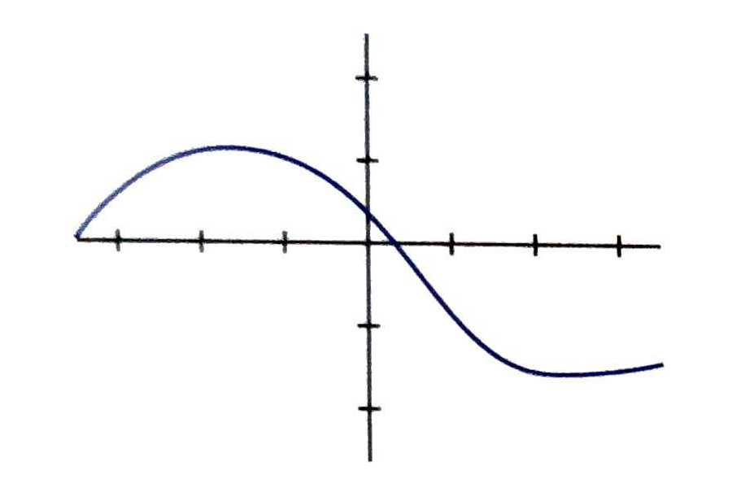
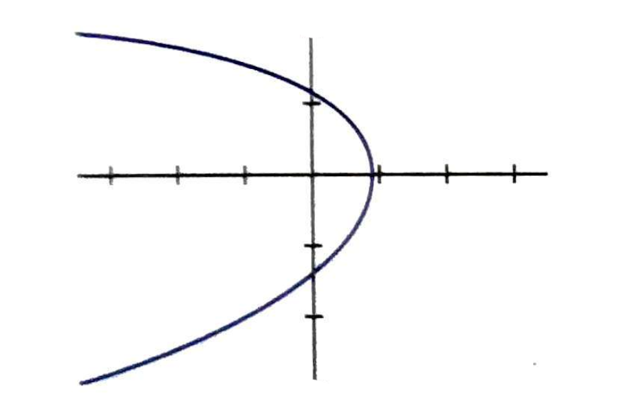
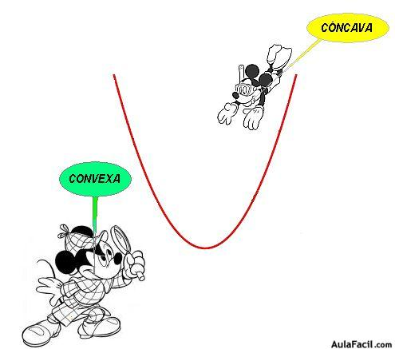

Funciones
Concepto de función
Una función es un objeto matemático que se utiliza para expresar la dependencia entre dos magnitudes de forma que a cada valor de una de ellas se le asigna uno y solo uno de la otra.
- Variable independiente: \[x\]
- Variable dependiente: \[y = f(x)\]


Formas de definir una función
- Enunciado o regla
- Tabla de valores
- Gráfica
- Expresión algebraica
Gráfica
Representamos los vares de valores (x, f(x)) para cada valor posible de x.
1Indica cual de las siguientes gráficas no corresponde con una función:
-

-

Expresión algebraica
Ejemplo: Utilizamos la notación \[f(x)=x^2\] para especificar a la función que a cada número x le hace corresponder su cuadrado \[x^2\]. Por lo tanto \[f(2) = 4\]; \[f(3) = 9\].
2Indica el valor de f(3) para cada caso:
- \[ f(x) = 3x + 2 \]
- \[ f(x) = x^2 \]
- \[ f(x) = \sqrt{x + 1} \]
Características de las funciones
Dominio de definición
Llamaremos dominio de una función \[f\] al conjunto de valores para los que esa función queda perfectamente definida.
\[Dom~f\]
Imagen
Se llama imagen o recorrido de una función a todos los valores de la variable dependiente que tienen algún valor de la variable independiente que se transforma en él por la función.
\[Im~f\]
Puntos de corte con los ejes
Los puntos de corte con los ejes de una función \[f\] son los puntos de intersección de la gráfica de la función con cada uno de los ejes de coordenadas.
Continuidad
Tipos de discontinuidades
- Evitable
- De salto finito
- De salto infinito
Crecimiento / Decrecimiento
Máximos / Mínimos
Periodicidad
Una función es periódica si su gráfica se va repitiendo cada cierto intervalo.
Simetrías
Una función simétrica es una función en la que se puede encontrar un eje de simetría en su representación gráfica.
- Simetría par
- Simetría impar
3Describe las características de las funciones en función de los parámetros vistos en clase:
FICHA
Análisis del Dominio
Buscaremos los "problemas" que puedan tener las expresiones.
Análisis de los Puntos de corte
- Eje x: Resolceremos la ecuación \[f(x) = 0\]
- Eje y: Calcularemos f(0)
4Calcula el dominio y los puntos de corte con los ejes de las siguientes funciones:
- \[f(x) = x^2 + 3x\]
- \[g(x) = \sqrt{x^2 - 5x + 4} \]
- \[t(x) = \frac{x^2- 3}{x - 6}\]
- \[s(x) = \frac{\sqrt{2x-3}}{x-10}\]
Funciones elementales
-
Algebraicas:
- Polinómicas
- Racionales
- Radicales
-
Transcendentes:
- Exponenciales
- Logarítmicas
- Trigonométricas
- Definidas a trozos
Polinómicas: Función constante
\[f(x) = c\]
Polinómicas: Función lineal
\[ f(x) = mx + n \]
Polinómicas: Función lineal
- Es una recta
- \[m\]: Pendiente.
- \[n\]: Ordenada en el origen
Polinómicas: Función lineal
Para representar calculamos dos puntos.
Polinómicas: Función cuadrática
\[ f(x) = ax^2 + bx + c \]
Polinómicas: Función cuadrática
- Es una parábola
-
Signo de \[a\]:
- Positivo: Ramas hacia arriba.
- Negativo: Ramas hacia abajo.
- Vértice en \[x=\frac{-b}{a}\].
- Simétrica par con respecto a una recta vertical partiendo de vértice.
Polinómicas: Función cuadrática
Para representar calculamos vértice, puntos de corte y puntos de la función teniendo en cuenta la simetría.
5Representa las siguientes funciones polinómicas:
- \[f(x) = 3x\]
- \[f(x) = -2x + 3\]
- \[f(x) = x^2 - 3x\]
- \[f(x) = 2\]
- \[f(x) = -2x^2 +10x + 12\]
- \[f(x) = x - 4\]
Transformaciones de funciones
- \[f(x-k)\]
- \[f(x) + k \]
- \[-f(x)\]
- \[f(-x)\]
Función racional
\[ f(x) = \frac{k}{x} \]
Función racional
Ver GeogebraFunción radical
\[ f(x) = \sqrt{x} \]
Función radical
Ver GeogebraFunción Exponencial
\[ f(x) = a^x \]
Función Exponencial
Ver GeogebraFunción Logarítmica
\[ f(x) = log_a(x) \]
Función Logarítmica
Ver GeogebraFunciones trigonométricas
\[ f(x) = sen(x) \]
\[ f(x) = cos(x) \]
\[ f(x) = tan(x) \]
6Busca las gráficas y funciones de tus compañeras que se corresponden con las tuyas.
FICHAs
7Resuelve el siguiente Kahoot! identificando las expresiones geométricas de las siguientes gráficas.
Kahoot!Función definida a trozos
\[ \begin{cases} f(x) ~~~ cond. \\ g(x) ~~~ cond. \\ \dots \end{cases} \]
8Representa las siguientes funciones definidas a trozos:
- \[f(x) = \left\{ \begin{array}{lcc} x - 3 & si & x \lt 5 \\ 4 & si & x \ge 5 \end{array} \right.\]
- \[t(x) = \left\{ \begin{array}{lcc} x^2 +7x + 10 & si & x \lt -1 \\ 8 & si & -1 \le x \le 3 \\ -x + 3 & si & x \gt 3 \end{array} \right.\]
- \[g(x) = \left\{ \begin{array}{lcc} 2x & si & x \lt -4 \\ 4 & si & -4 \le x \lt 6 \\ -x^2 +12x -30 & si & x \ge 6 \end{array} \right.\]
Operaciones con funciones
Suma, resta producto y cociente
Composición de funciones
\[ (f \circ g)(x) = f(g(x)) \]
9Dadas las funciones \[f(x) = 2x + 3\] , \[g(x) = \sqrt{x}\] y \[s(x) = x^2\] calcula:
- \[ (f+g)(x) \]
- \[ (f \cdot g)(x) \]
- \[ (\frac{s}{f})(x)\]
- \[ (g \circ f)(x)\]
- \[ (f \circ s)(x)\]
Función inversa
\[ (f \circ f^{-1})(x) = id(x) \]\[ f(x) = \sqrt{x}\] e \[g(x) = x^2\]. Entón \[(f \circ g)(x) = \sqrt{x^2} = x\].
Cálculo de la función inversa
10Calcula la inversa de las siguientes funciones:
- \[f(x) = (x-2)^2\]
- \[g(x) = \sqrt{x-3} \]
- \[t(x) = \frac{x-1}{x+2}\]
Concepto de límite
Valor que toma la función cuando nos aproximamos a un cierto punto.
Límite lateral
Lím. por la izquierda: \[ \lim_{x \to a^-} f(x) = b \]
Lím. por la derecha: \[ \lim_{x \to a^-} f(x) = b \]
10Calcula los siguientes límites analizando la gráfica A.7 del anexo de funciones:
- \[ \lim_{x \to -8^-} f(x) \]
- \[ \lim_{x \to -8^+} f(x) \]
- \[ \lim_{x \to 11^-} f(x) \]
- \[ \lim_{x \to 11^+} f(x) \]
- \[ \lim_{x \to 5^-} f(x) \]
- \[ \lim_{x \to 5^-} f(x) \]
Existencia de límite
El límite de una función en un punto existe cuando existen los límites laterales y estos son iguales.
Cálculo de límites
\[ \lim_{x \to a} f(x) \]
De forma general el límite de una función se calcula calculando f(a).
En una función definida a trozos, en los cambios de definición tendremos que hacer límites laterales y comprobar que coinciden.
11Calcula los límites cuando x tiende a 3 de las siguientes funciones:
- \[ f(x) = 3x + 4 \]
- \[ f(x) = \frac{1}{x} \]
- \[ f(x) = \left\{ \begin{array}{lcc} x - 2 & si & x \lt 3 \\ 1 & si & x \ge 3 \end{array} \right.\]
- \[ f(x) = \left\{ \begin{array}{lcc} x^2 -6x + 9 & si & x \lt 3 \\ x-6 & si & x \ge 3 \end{array} \right.\]
Propiedades de los límites
Si \[ \lim_{x \to a} f(x) = L_f \] y \[ \lim_{x \to a} g(x) = L_g \], se cumple:
- \[ \lim_{x \to a} (f(x) \pm g(x) ) = L_f \pm L_g \]
- \[ \lim_{x \to a} (f(x) \cdot g(x) ) = L_f \cdot L_g \]
- \[ \lim_{x \to a} \frac{f(x)}{g(x)} = \frac{L_f}{L_g} \]
- \[ \lim_{x \to a} (f(x)^{g(x)} ) = L_f^{L_g} \]
Límites y el infinito
Ejemplo: función racional \[f(x) = \frac{1}{x} \]
Ver Geogebra
Cuando el resultado es \[ \pm \infty \]
Ejemplo: La función \[f(x) = \frac{1}{x}\] tiene por límites laterales en 0:
\[\lim_{x \to 0^-} f(x) = -\infty\]
\[\lim_{x \to 0^+} f(x) = +\infty\]
Cuando la función tiende a \[ \pm \infty \]
Ejemplo: La función \[f(x) = \frac{1}{x}\] tiene por límites cuando \[x\] tiende a \[\pm \infty\]:
\[\lim_{x \to -\infty} f(x) = 0^-\]
\[\lim_{x \to +\infty} f(x) = 0+\]
Operaciones con \[0\] e \[\infty\]
Supongamos que N es un real estrictamente mayor que cero.
Con la suma...
- \[ N \pm \infty = \] \[ \pm \infty\]
- \[ 0 \pm \infty = \] \[ \pm \infty\]
- \[ \infty + \infty = \] \[\infty\]
- \[ \infty - \infty = \] INDETERMINACIÓN
Y que pasa con los polinomios...
\[ \lim_{x\to \infty} x^3 -3x^2 = \]
Analizamos siempre el coeficiente de término de mayor grado pues es el que marcará el sentido de crecimiento.
Con el producto...
- \[ \pm N \cdot \infty = \] \[\pm \infty\]
- \[ N \cdot (-\infty) = \] \[ -\infty\]
- \[ \infty \cdot (\pm \infty) = \] \[\pm \infty\]
- \[ 0 \cdot 0 = \] \[0\]
- \[ 0 \cdot (\pm \infty) = \] INDETERMINACIÓN
Con la división...
- \[ \frac{k}{0} = \] \[\infty\] ● \[ \frac{N}{\infty} = \] \[0\] ● \[ \frac{\infty}{N} = \] \[\infty\]
- \[ \frac{\infty}{0} = \] \[\infty \cdot \frac{1}{0} = \infty\]
- \[ \frac{0}{\infty} = \] \[0 \cdot \frac{1}{\infty} = 0\]
- \[ \frac{\infty}{\infty} = \] INDETERMINACIÓN
- \[ \frac{0}{0} = \] INDETERMINACIÓN
Con la potencia...
- \[ N^{\infty} = \] \[\infty\] (con \[N \gt 1\])
- \[ N^{\infty} = \] 0 (con \[0 \lt N \lt 1\])
- \[ 0^\infty = \] 0
- \[1^\infty = \] INDETERMINACIÓN
- \[\infty^0 = \] INDETERMINACIÓN
- \[0^0 =\] INDETERMINACIÓN
12Calcula los siguientes límites empleando las propiedades de las operaciones con el 0 y el \[ \infty \]:
- \[ \lim_{x \to 0} 3 + \frac{1}{2x}\]
- \[ \lim_{x \to -\infty} x^2+3x\]
- \[ \lim_{x \to \infty} ln(x) + \sqrt{x+3} \]
- \[ \lim_{x \to \infty} \sqrt{2x} - \sqrt{x+1} \]
- \[ \lim_{x \to \infty} (2x + 3) \cdot ln(x) \]
13
- \[ \lim_{x \to \infty} \frac{2^{-x}}{x^2 + 3}\]
- \[ \lim_{x \to \infty} \frac{ln(x)}{e^{-2x+3}}\]
- \[ \lim_{x \to \infty} \frac{x^3-2}{x^2+3x}\]
- \[ \lim_{x \to -1} \frac{x^2-1}{x+1}\]
- \[ \lim_{x \to \infty} (\frac{2}{x})^{x+3}\]
- \[ \lim_{x \to 0} (1-x)^{\frac{1}{x}}\]
Indeterminaciones
Estudiaremos como resolver las siguientes indeterminaciones:
- Indeterminación de tipo \[ \frac{\infty}{\infty} \]
- Indeterminación de tipo \[ \frac{0}{0} \]
- Indeterminación de tipo \[ \infty - \infty \]
- Indeterminación de tipo \[ 1^{\infty} \]
Indeterminación de tipo \[ \frac{\infty}{\infty} \]
La técnica consistirá en dividir toda la expresión entre la parte literal del término de mayor grado.
Dependiendo del grado de los dos polinomios podemos tener como resultado: 0, un número o \[\infty\]
Indeterminación de tipo \[ \frac{\infty}{\infty} \]
En caso de intervenir expresiones no polinómicas, tendremos que estudiar la velocidad de crecimiento de estas expresiones. De mayor a menor tenemos:
- Exponenciales
- Polinómicas
- Radicales
- Logarítmicas
14Resuelve los siguientes límites aplicando lo visto sobre indeterminaciones de tipo \[ \frac{\infty}{\infty} \]:
- \[ \lim_{x \to \infty} \frac{3x^2-2x+1}{-x^3+2x^2+x-3} \]
- \[ \lim_{x \to \infty} \frac{x^2-3x+2}{2x^2-x+5} \]
- \[ \lim_{x \to \infty} \frac{4x^3-x^2+2x+5}{-2x^2+7x-3} \]
- \[ \lim_{x \to \infty} \frac{-x^4-5x^2+3}{2x^3+x} \]
- \[ \lim_{x \to \infty} \frac{x-4}{\sqrt{x^2-1}} \]
- \[ \lim_{x \to \infty} \frac{x^2-4}{\sqrt[3]{x^7-1}} \]
- \[ \lim_{x \to \infty} \frac{e^x}{x^2 +3x} \]
Indeterminación de tipo \[ \frac{0}{0} \]
Aplicaremos dos técnicas:
- simplificar la fracción algebraica factorizando previamente.
- Multiplicando por el conjugado (en caso de la presencia de raíces).
Ejemplo: \[ \lim_{x \to 2} \frac{x^2-4}{x+2} \] \[ \lim_{x \to -5} \frac{x+5}{\sqrt{x+6}-1} \]
15Resuelve los siguientes límites aplicando lo visto sobre indeterminaciones de tipo \[ \frac{0}{0} \]:
- \[ \lim_{x \to 1} \frac{x^3-x^2}{x^2+3x-4} \]
- \[ \lim_{x \to 0} \frac{x^2+3x}{2x^2-x} \]
- \[ \lim_{x \to -1} \frac{x^3+x^2+x+1}{x^2-x} \]
- \[ \lim_{x \to 1} \frac{x-1}{\sqrt{x}-1} \]
- \[ \lim_{x \to 0} \frac{ \sqrt{1+x}-\sqrt{1-x}}{x} \]
Indeterminación de tipo \[ \infty \cdot 0 \]
La transformaremos en una de tipo \[ \frac{0}{0} \] o de tipo \[ \frac{\infty}{\infty} \].
16Resuelve los siguientes límites aplicando lo visto sobre indeterminaciones de tipo \[ \infty \cdot 0 \]:
- \[ \lim_{x \to \infty } e^{-x} \cdot (x^2 + x + 1) \]
- \[ \lim_{x \to 1} \frac{1}{\sqrt{1} -1} \cdot (x-1) \]
Indeterminación de tipo \[ \infty - \infty \]
Aplicaremos dos técnicas:
- Operando la diferencia en caso de que se pueda.
- Multiplicando y dividiendo por el conjugado (en caso de la presencia de raíces).
17Resuelve los siguientes límites aplicando lo visto sobre indeterminaciones de tipo \[ \infty - \infty \]:
- \[ \lim_{x \to 3} (\frac{4}{x-3} - \frac{3x}{x^2-x-6}) \]
- \[ \lim_{x \to \infty} ( \frac{2x^4-x^2+1}{x^3} - \frac{2x^3+x^2-x+4}{3x^2} ) \]
- \[ \lim_{x \to \infty} (\sqrt{4x^2-2x+6} - 2x+1) \]
- \[ \lim_{x \to 2} (\frac{1}{\sqrt{x-2}} - \frac{3}{\sqrt{x^2-4}}) \]
Indeterminación de tipo \[ 1^{\infty} \]
Usaremos la igualdad \[e = \lim_{x \to \infty} (1+ \frac{1}{x})^x\]
18Resuelve los siguientes límites aplicando lo visto sobre indeterminaciones de tipo \[ 1^{\infty} \]:
- \[ \lim_{x \to \infty} (1-\frac{2}{x})^{x+1} \]
- \[ \lim_{x \to \infty} (\frac{x^2-2x+1}{x^2-4})^{\frac{x^2}{x-2}} \]
- \[ \lim_{x \to \infty} (\frac{x^2-1}{x^2+1})^{x} \]
- \[ \lim_{x \to 1} (\frac{x}{2x-1})^{\frac{1}{x-1}} \]
Continuidad
Una función \[f\] es continua en un punto \[x_0\] si:
- Existe el límite \[ \lim_{x \to x_0} f(x) \]
- Y este es igual al valor de la función en el punto (\[\lim_{x \to x_0} f(x) = f(x_0)\])
19Indica si las siguientes funciones son continuas en el punto \[ x_0 = 3 \]:
- \[f(x) = x^2-3x\]
- \[g(x) = \frac{x^2-5x+6}{x-3} \]
- \[t(x) = \frac{x}{x^2-9}\]
- \[ f(x) = \left\{ \begin{array}{lcc} x - 2 & si & x \lt 3 \\ 1 & si & x \ge 3 \end{array} \right.\]
- \[ f(x) = \left\{ \begin{array}{lcc} x^2 - 4 & si & x \lt 3 \\ 3 & si & x \ge 3 \end{array} \right.\]
Continuidad
Una función \[f\] es continua en un intervalo cuando lo es en cada uno de los puntos de dicho intervalo.
Continuidad
En general todas las funciones vista son continuas en donde están definidas.
Deberemos analizar cambios en la definición de la función (si es a trozos) y puntos donde no están definidas.
Tipos de discontinuidades
- Evitable
- De salto finito
- De salto infinito
Discontinuidad evitable
Existe el límite de la función en el punto \[ x_0\] pero este límite no es igual al valor de la función en dicho punto o la función no está definida en dicho punto.
Discontinuidad de salto finito
Existen los límites laterales en \[ x_0\] pero estos no son iguales y por tanto no existe el límite de la funcióne en el punto.
Discontinuidad de salto infinito
Alguno de los límites laterales de la función en el punto \[ x_0\] tiende a \[ \pm \infty \].
20Indica el tipo de discontinuidad que presentaban en las funciones del ejercicio anterior.
21Estudia la continuidad de las siguientes funciones:
- \[ f(x) = 3x + 4\]
- \[ f(x) = \frac{2}{x-4} \]
- \[ f(x) = \frac{x+2}{x^2+5+6} \]
- \[ f(x) = \left\{ \begin{array}{ll} 2x+6 & x \lt 1 \\ x-7 & x \ge 1 \end{array} \right.\]
- \[ f(x) = \left\{ \begin{array}{ll} 2x+3 & x \le 1 \\ x^2+2x+2 & 1 \lt x \lt 2 \\ -3 & x \ge 2 \end{array} \right.\]
- \[ f(x) = \left\{ \begin{array}{ll} \frac{2x+6}{x} & x \lt 1 \\ x+7 & x \ge 1 \end{array} \right.\]
22Calcula el valor del parámetro \[a\] para que las siguientes funciones sean continuas:
- \[ f(x) = \left\{ \begin{array}{ll} 2x+a & x \le 1 \\ x^2 - ax + 2 & x \gt 1 \end{array} \right.\]
- \[ f(x) = \left\{ \begin{array}{ll} e^{ax} & x \le 0 \\ x+2a & x \gt 0 \end{array} \right.\]
Asíntotas
Asíntotas verticales
Si \[ \lim_{x \to a} f(x) = \pm \infty \] entonces la función \[f\] tiene una asíntota vertical en \[x = a\]
Ejemplo: \[f(x)=\frac{x^2-x-6}{3x^2-12}\]
Asíntotas horizontales
Si \[ \lim_{x \to \pm \infty} f(x) = a \] entonces la función \[f\] tiene una asíntota horizontal por la izquierda o por la derecha en \[y = a\]
Ejemplo: \[f(x)=x \cdot e^x\]
Asíntotas oblicuas
Las asíntotas oblicuas son rectas \[ y = mx +n \] donde:
\[ m = \lim_{x \to \pm \infty} \frac{f(x)}{x}\]
\[ n = \lim_{x \to \pm \infty} (f(x) - mx) \]
Ejemplo: \[f(x) = \frac{2x^2-3x+1}{4x-2}\]
23Estudia la presencia de asíntotas en las siguientes funciones:
- \[f(x) = \frac{x-2}{x^2-4} \]
- \[f(x) = \frac{2x^2-1}{x+2} \]
- \[f(x) = \frac{3x^2+x+1}{x^2-3x-4} \]
- \[f(x) = \frac{x^2-3x}{x^2-x-6}\]
Definición de derivada
La derivada de una función en un punto \[x_0\] es la pendiente de la recta tangente a dicha función en dicho punto. Se denota por \[f'(x_0)\].

Recordando...
Pendiente de una recta
\[ m = \frac{y_2-y_1}{x_2-x_1} = \frac{f(x_2) - f(x_1)}{x_2-x_1} \]
Buscando la pendiente...
Ver geogebra\[f'(x_0) = \lim_{x \to x_0} \frac{f(x) - f(x_0)}{x - x_0}\]
\[f'(x_0) = \lim_{h \to 0} \frac{f(x_0 + h) - f(x_0)}{h}\]
24Calcula usando la definición, las siguientes derivadas:
- Siendo \[f(x) = 3x - 4\], \[f'(2)\]
- Siendo \[g(x) = x^2 - 4\], \[g'(5)\]
Derivabilidad
Una función es derivable en un punto si existe el límite que usamos para definir la función derivada. Por lo tanto tendrán que existir sus límites laterales y estos ser iguales.
Derivabilidad
Para que una función sea derivable en un punto, esta ha de ser continua en dicho punto.
Graficamente, las funciones no son derivables en los "picos".
25Estudia la continuidad y derivabilidad de las siguientes funciones:
- \[ f(x) = \left\{ \begin{array}{lc} x^2+1 & x \le 1 \\ -x+3 & x \gt 1 \end{array} \right.\]
- \[ t(x) = |x-5| \]
- \[ f(x) = \left\{ \begin{array}{lc} \frac{x^2-9}{x-3} & x \neq 3 \\ 6 & x = 1 \end{array} \right.\]
26 Comprueba si existe algún valor de \[a\] (y de \[b\]) para el cual sean derivables las siguientes funciones en los puntos indicados.
- \[ f(x)= \left\{ \begin{array}{lc} ax+2 & x<1 \\ 3(x-2)^2 & x\ge 1 \end{array} \right. \] en \(x=1\).
- \[ f(x)= \left\{ \begin{array}{lc} a-x^2 & x<1 \\ \dfrac{2}{ax} & x\ge 1 \end{array} \right. \] en \(x=1\).
Función derivada
Sea f una función, la función derivada f' es aquella que lleva a cada valor en la derivada de la función f.
Función derivada
Ver geogebraDerivadas sucesivas
Como f' también es una función, podemos calcular su derivada.
Existe por lo tanto una función derivada segunda, tercera, cuarta, etc.
Se denotan por \[f''(x)\], \[f'''(x)\], \[f^{4)}(x)\dots\]
27Calcula la función derivada primera y segunda de las siguientes funciones:
- \[f(x) = 3x\]
- \[g(x) = x^2 + 3\]
Cálculo de derivadas
Función constante
\[f(x) = N\]
\[f'(x) = 0 \]
Función potencia
\[f(x) = x^n\]
\[f'(x) = n \cdot x^{n-1} \]
Ejemplo: \[ f(x) = x^3 \Rightarrow \] \[f'(x) = 3x^2\]
Ejemplo: \[ f(x) = \sqrt{x} = x^{1/2} \Rightarrow \] \[f'(x) = \frac{1}{2} \cdot x^{-1/2} = \frac{1}{2\sqrt{x}}\]
Derivadas de operaciones: producto por escalar
\[ (k \cdot f)'(x) = k \cdot f'(x) \]
Ejemplo: \[f(x) = 3x^2 \Rightarrow \] \[f'(x) = 3 \cdot 2 \cdot x = 6x\]
Derivadas de operaciones: suma/resta
\[(f+g)'(x) = f'(x) + g'(x)\]
Ejemplo: \[ f(x) = x^2 + 3x \Rightarrow \] \[f'(x) = 2x + 3\]
28 Calcula las derivadas de los siguientes funciones polinómicas:
- \[ f(x) = 3\]
- \[ f(x) = x^3 \]
- \[ f(x) = x^3 + 2x \]
- \[ f(x) = x^2 + 3x + 4 \]
- \[ f(x) = 2x^4 + 5x^2 \]
Derivadas elementales
Ver tabla
29Calcula las derivadas de las siguientes funciones elementales:
- \[ f(x) = 2^x \]
- \[ f(x) = ln(x) \]
- \[ f(x) = sen(x) + cos(x)\]
- \[ f(x) = \sqrt{x}\]
Derivadas de operaciones: producto
\[ (f \cdot g)'(x) = f'(x)\cdot g(x) + f(x)\cdot g'(x) \]
Derivadas de operaciones: cociente
\[ (\frac{f}{g})'(x) = \frac{f'(x) \cdot g(x) - f(x) \cdot g'(x)}{[g'(x)]^2}\]
30Calcula las derivadas de los siguientes productos y cocientes de funciones:
- \[ f(x) = 2x \cdot 2^x \]
- \[ f(x) = sen(x) \cdot \sqrt{x} \]
- \[ f(x) = \frac{sen(x)}{2x} \]
- \[ f(x) = \frac{e^x}{3x^2}\]
Derivadas de operaciones: composición
Regla de la cadena
\[ (f \circ g)'(x) = f'(g(x)) \cdot g'(x) \]
31Calcula las siguientes derivadas:
- \[ f(x) = sen(x^3 -2x) \]
- \[ f(x) = ln(x^2+4) \]
- \[ f(x) = cos((x+3)^2) \]
- \[ f(x) = 2^{x^2+3x} \]
- \[ f(x) = ln(3x \cdot 3^x) \]
- \[ f(x) = \sqrt{sen(x^2 +3)} \]
- \[ f(x) = \frac{1}{cos^2(x^2 + 3)}\]
- \[ f(x) = (\frac{x^2+3}{x-4})^3\]
- \[ f(x) = \frac{sen((x+3)^3)}{2x^2}\]
- \[ f(x) = \sqrt[3]{\frac{x^2+3}{sen(x)}}\]
- \[ f(x) = ln(\sqrt{\frac{x^2+3}{cos(x)}})\]
- \[ f(x) = tan(x^2 + \sqrt{3x})\]
Función derivada y Derivabilidad
Si una función \[f\] es continua en \[x = x_0\] y existe el límite \[\lim_{x\to x_0^-} f'(x) = L\] entonces \[f'(x_0^-) = L\]
Si una función \[f\] es continua en \[x = x_0\] y existe el límite \[\lim_{x\to x_0^+} f'(x) = L\] entonces \[f'(x_0^+) = L\]
En caso de no existir dicho límite tendríamos que recurrir a la definición de derivada.32Comprueba si existe algún valor de \[a\] para el cual sean derivables las siguientes funciones en los puntos indicados.
- \[ f(x) = \left\{ \begin{array}{lc} ax+2 & x \lt 1 \\ 3(x-2)^2 & x \ge 1 \end{array} \right.\] en el punto \[x=1\]
- \[ f(x) = \left\{ \begin{array}{lc} a-x^2 & x \le 1 \\ \frac{2}{ax} & x \ge 1 \end{array} \right.\] en el punto \[x=1\]
Derivada y (De)Crecimiento de una función
Ver en Geogebra33Indica si las siguientes funciones están creciendo o decreciendo en los puntos indicados:
- \[ f(x) = x^3 - 3 \] en \[ x = -5 \]
- \[ f(x) = 2 - \sqrt{x^2 + 3} \] en \[ x = 7 \]
- \[ f(x) = ln(x^2 + 2x +6) \] en \[ x = 8 \]
Puntos críticos de una función
Son aquellos donde la derivada primera vale 0.
34Indica los puntos críticos de las funciones anteriores:
- \[ f(x) = x^3 - 3 \] en \[ x = -5 \]
- \[ f(x) = 2 - \sqrt{x^2 + 3} \] en \[ x = 7 \]
- \[ f(x) = ln(x^2 + 2x +6) \] en \[ x = 8 \]
Determinación de punto crítico
Análisis de crecimiento y decreciendo.
35Indica si los puntos críticos del ejercicio anterior son máximos, mínimos o puntos de inflexión:
- \[ f(x) = x^3 - 3 \] en \[ x = -5 \]
- \[ f(x) = 2 - \sqrt{x^2 + 3} \] en \[ x = 7 \]
- \[ f(x) = ln(x^2 + 2x +6) \] en \[ x = 8 \]
Determinación de punto crítico
Criterio segunda derivada
- \[f''(x_0) \lt 0\]: Mínimo
- \[f''(x_0) \gt 0\]: Máximo
- \[f''(x_0) = 0\]: Posible Punto de Inflexión
Análisis de una función: crecimiento/decreciendo y máximos/mínimos
36Analiza el crecimiento/decreciemiento y los máximos y mínimos de las siguientes funciones:
- \[ f(x) = x^2 -5x +12\]
- \[ f(x) = 2x^3 -3x^2\]
- \[ f(x) = x^4-4x^3-2x^2+12x\]
- \[ f(x) = \frac{x^2}{1+x^2}\]
- \[ f(x) = x^3 - 7x^2 + 36\]
Curvatura
- Concavo
- Convexo
Polígonos...
Pero las funciones...

Curvatura
- Concava: la recta tangente queda por encima de la gráfica.
- Convexa: la recta tangente queda por debajo de la gráfica.
La función \[x^2\] es CONVEXA
Curvatura
- Convexo: \[f''(x) \lt 0\]
- Concavo: \[f''(x) \gt 0\]
Puntos de inflexión
Cambio de cóncavo a convexo o convexo a cóncavo.
\[f''(x) = 0\] y \[f'''(x) \neq 0\]
Análisis de concavidad y convexidad
37Analiza la curvatura de las siguientes funciones:
- \[ f(x) = 2x^3 -3x^2\]
- \[ f(x) = x^4-4x^3-2x^2+12x\]
- \[ f(x) = x^3 - 7x^2 + 36\]
Análisis de una función
- Dominio
- Puntos de corte
- Continuidad
- Asíntotas
- Crecimiento/Decrecimiento
- Máximos/Mínimos
- Curvatura y puntos de inflexión
- (Simetría)
- (Periodicidad)
38Analiza las siguientes funciones:
- \[ f(x) = \frac{x^2}{x-2} \]
- \[ f(x) = \frac{x^2+x+1}{x^2} \]
- \[ f(x) = \frac{x}{x^2+3} \]
Problemas de optimización
Debemos expresar el problema como una función y luego calcular el máximo o mínimo.